Je cockpit wordt geladen…

Portfolio AnalysisJe cockpit wordt geladen…
Bronnen: Yahoo Finance, Google News, CNN en je weging uit getquin. Ontwikkelingen en beleggingscases zijn samengevat door Claude. De cockpit laat zien wat jouw eigen regels opleveren en is geen persoonlijk beleggingsadvies.